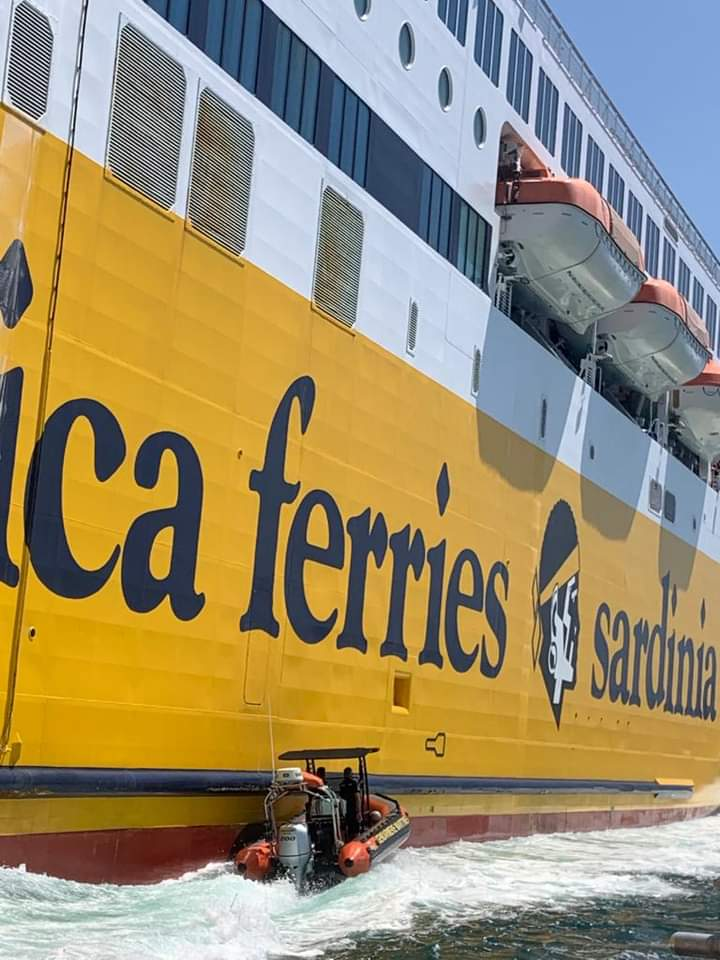

Peloton de sureté maritime et portuaire militaire de Toulon

Missions :
Les deux missions principales du PSMP-M TOULON sont la sûreté maritime dans les ports de Méditerranée, ainsi que de sécurité défense de la base navale de Toulon : Elle assure également : - La sécurisations des mouvements de navires militaires sensibles (sous marins nucléaire d'attaque, porte-avions) aussi bien depuis la terre qu’en mer, - Une vérification minutieuse des navires avec une fouille intérieure, un contrôle des documents, des équipages et une visite extérieure des coques par des plongeurs, - Les contrôles à l’embarquement et au débarquement des paquebots, - La sécurisation des navires à passagers pour les liaisons effectuées par le réseau mistral entre Toulon, la Seyne sur Mer et Saint Mandrier, - La surveillance terrestre de tout les sites militaires de Toulon et ses alentours.
Moyens :
- Mobilité : Véhicules : - Un véhicule banalisé grande capacité, - 4 véhicules sérigraphiés gendarmerie maritime, - Un véhicule dédié pour les plongeurs. Moyens nautiques : - Une Vedette de sûreté maritime (Gantelet), - Une Embarcation de sûreté maritime et portuaire équipé de 2 moteurs de 300cv chacun, - Un Semi rigide EFR NG équipé d’un moteur de 200 cv. - Divers : - Local et équipement de plongée sous-marine, - Matériels d’intervention : gilets lourd pare-balles, lot effraction, boucliers pare-balles, - Matériels informatique et de communication (radio, ordinateurs...).
Effectifs :
- 21 personnels : 19 Sous-officiers, 2 Gendarmes adjoints volontaire. - Police Judiciaire : OPJ : 11 personnels. - Pilotes d’embarcation : 12 personnels. - Plongeurs : 5 personnels. - Divers : - RECOnnaissance et Neutralisation d’Engin EXplosif (Reco-Nedex): 4 personnels.